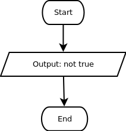

Negasi adalah operasi untuk mengubah nilai boolean menjadi sebaliknya. Negasi true adalah false, sedangkan negasi false adalah true.
Dalam bahasa sehari-hari, negasi bisa diterjemahkan sebagai kata tidak. Tidak benar berarti salah, tidak salah berarti benar. Nah, kira-kira kalimat berikut ini benar atau salah?
"Hari ini tidak tidak tidak tidak tidak tidak tidak tidak tidak tidak tidak tidak tidak tidak tidak hujan"
BTW, sekarang sedang hujan nggak sih?

Hujannya di luar,
Basahnya di pipi,
Getirnya di hati...
~ Robertus, A.P. (2016), Mahasiswa Informatika semester akhir